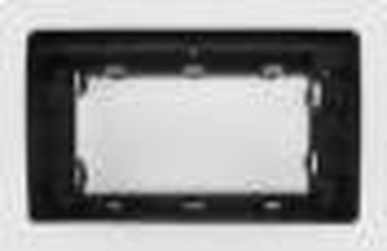
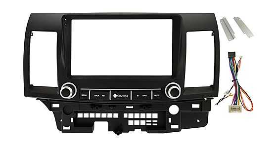

Рамка для магнитолы Mitsubishi Lancer (Мицубиси Лансер)
Рамка для установки магнитолы в Mitsubishi Lancer: 8 вариантов по годам, цены от 2 200 ₽, под заказ. Подберём провода, установка в Находке — от 1 000 ₽. Отправим по всей России.

Рамки и крепления · Mitsubishi
Рамка 2006 Mitsubishi Lancer IX
2 200 ₽

Рамки и крепления · Mitsubishi
Рамка Mitsubishi Lancer 2008 +
2 300 ₽

Рамки и крепления · Mitsubishi
Рамка Mitsubishi Lancer 2003-2007 (чёрная)
2 300 ₽

Рамки и крепления · Mitsubishi
Рамка Mitsubishi Lancer 2003-2007 (серая)
2 300 ₽

Рамки и крепления · Mitsubishi
Рамка Mitsubishi Lancer IX 2000 - 2010 (перенос климата)
2 700 ₽

Рамки и крепления · Mitsubishi
Рамка Mitsubishi Lancer X 2007+
2 700 ₽

Рамки и крепления · Mitsubishi
Рамка 1994 MITSUBISHI LANCER (9INCH, RHD)
3 800 ₽

Рамки и крепления · Mitsubishi
Рамка Mitsubishi Lancer 2010-2016
5 600 ₽
Рамка и провода зависят от года и комплектации — назовите марку, модель и год, подтвердим точно. Павильон на авторынке Северторг (ул. Артёмовская, 6, Находка), с 10:00 до 15:00. Отправим по всей России, до ТК в Находке — 300 ₽. Цены справочные и не являются публичной офертой.